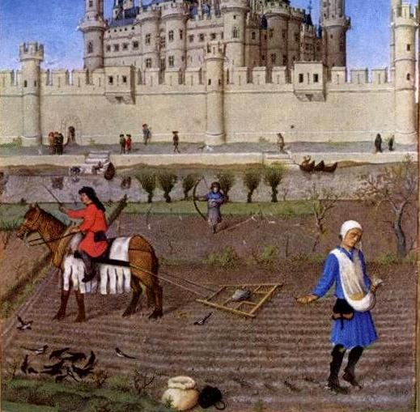
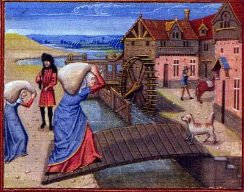
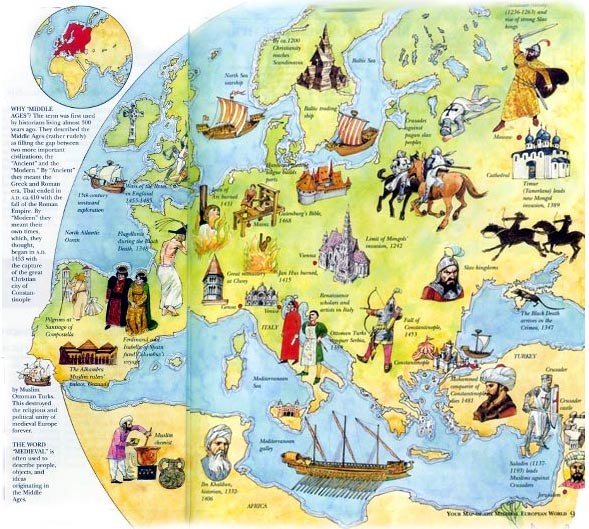

Idade m�dia
A idade m�dia � caracterizada por ser a idade das sombras, isso se d� pelo fato de que a igreja cat�lica possuia toda a soberania, e por isso era completamente absolutista, causando assim a famosa inquisi��o, que nada mais foi do que a morte de centenas ou milhares de pessoas que contradiziam as ideologias da pr�pria igreja, e o mais interessante, � que mesmo antes da idade m�dia pr�priamente dita j� havia sinais de que a igreja cat�lica impunha suas cren�as sobre qualquer pessoa.

Al�m disso, a idade m�dia tamb�m � marcada por ser a idade das trevas pois mesmo os que n�o faziam parte do Clero, tamb�m eram extremamente absolutistas, como os suseranos por exemplo (esp�cie de l�der dos feudais) e tamb�m os burgueses que se sentiam superiores ao resto da populac�o.
Organiza��o pol�tica
O tipo de organiza��o pol�tica mais comum na idade m�dia, eram sem d�vida o feudalismo, trabalho que tinham como estrutura hier�rquica os Suseranos,e tamb�m os vassalos, sua rela��o era de poder, o suserano dava um lote de terra ao seu vassalo, em troca o vassalo o atribu�a trabalho e lealdade. O rei suserano, como j� � de se esperar era o mais poderoso.
Al�m disso, ainda possuimos uma s�rie de classifica��es para o sistema hier�rquizado da idade m�dia, como os pr�ncipes, burgueses, alta nobreza, escravos dentre outros.
Economia
A economia medieval, era basicamente sustentada por agricultura, em sua maior parte, em suma, tamb�m havia outras formas de se conseguir dinheiro, como por exemplo a tecelagem, que n�o era t�o comum, e tamb�m n�o possuiam tecnologia o suficiente, mas ainda sim rendia um dinheiro consider�vel.
Existiam moedas de troca, por�m algumas pessoas ainda sim trocavam mercadorias, como em um sistema ut�pico, fazendo refer�ncia a Utopia de Thomas More, mas foi exatamente nesse per�odo que se come�ou a preocupar-se de forma clara e objetiva, com a troca matirial, e o sistema de poder baseado em terras, como era o caso do Feudo, que obviamente, sustentavam de forma gigante a economia tratada como medieval.
Cultura
Baseado em tudo o que foi lido at� esse exato ponto da pequena contextualiza��o escrita sobre a idade m�ida, j� � possivel se ter uma no��o de como era toda a base cultural durante mil longos anos de, como � comumente chamado, "idade das trevas". Toda, ou quase toda a cultura refere-se ao "achismo" de um determinado local, com base em tudo o que foi vivido e passado de gera��o em gera��o dentro dessa mesma localidade contextualizada. Dentro desse ponto n�o era diferente a mil anos atr�s, o clero, e a igreja cat�lica detinham o maior poder, e se utilizavam dele, matava da pior forma aqueles que nasceram com problemas f�sicos, o acusando de ser "pertencente ao dem�nio" al�m de matar tamb�m aqueles que pensavam, ou eram duvidadores de todo um sistema pol�tico-social. Isso chamado de inquisi��o.
Todavia, as pessoas concondavam com esse sistema, que para n�s do mundo contempor�neo seria abominavel, pois era uma quest�o de cultura, e n�o s� isso, al�m da igreja dominante, tamb�m n�o podemos deixar de citar todos aqueles que detinham poder e abusavam do mesmo, esses seriam referidos por mim como sendo os da alta nobreza, e o seu rei absolutista.
Depois de exposto essas premissas, fica claro todo o entendimento e bagagem social que a idade m�dia proporcionou ao que se diz moderno, mesmo que suas cren�as eram em suma ignorantes por assim dizer n�o podemos negar que esse per�odo hist�rico nos proporcionou riqueza cultural, e acima disso, conhecimento.
